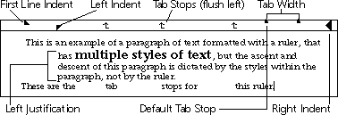

Text
Galaxy provides classes for processing, formatting and displaying text in Galaxy applications. The Text class separates text data storage from display functionality. This means you can strictly manage text data (insert, delete, process, and search without displaying any text) or also manage the display of text data. For example, different views of the same text data can customize the display of the text. Refer to Figure 81 for an example of different ways to display text.
Figure 81. Sample views of text
Galaxy also provides text styles (including font, typeface, size, and location), and text rulers (used to specify attributes such as justification, margins, and tab stops), and text tags (to specify a location or selection in the text data). The Text classes also includes a convenience class called a textitem; this is useful for constructing user input fields.
After reading this chapter, you may want to read the chapter on the Undo class to learn about implementing undo and redo actions. You may also want to read the Text Ruler Item chapter to find out how graphical rulers interface with text rulers. observer A "pipeline" or object between text data and the display of
the text. An observer determines if the text has changed,
and if so, notifies the textview.
position Location in text data.
selection Arbitrary pair of starting and ending text positions that
denote a range of text.
style Describes the way text is displayed. A style consists of
attributes such as font, size, descent, and ascent.
text ruler A text ruler specifies information on indentation,
justification, and tab settings to change the way text is
displayed.
text tag Denotes an assigned location or range in text.
textview Display of the text. It is through a textview that the end-
user manipulates and edits text.
Relationship to Other Classes
The Text classes also use aspects of the String classes to insert and collect text. You should be familiar with the String classes before reading this chapter.iterator Type used to loop through different aspects of text, such as
styles, text rulers, and selections. Iterators are often used to
collect ranges of text that follow a certain behavior.
Primary Text Classes
There are three primary text classes: text data, textview, and textitem. Text data is the actual text and related information about the text. A textview, using the related information of the text data, displays the text, and also handles user input. For convenience, Galaxy provides a textitem class A textitem is a textview subclass that contains a text data object. A textitem combines the functionality of both text data and a textview without the overhead of using two different objects.
For most applications, textitems are sufficient for user input fields and one line interaction. The display of textitems is consistent with expected behavior of dialog items. However, for complete control of the behavior of text fields and the display of text, use textviews and text data objects.
Textitems
A textitem (vtextitem) is a textview subclass that also references a text data object. Textitems are convenient to use when gathering input from an end-user, or for simple text manipulation. Textitems are usually created through the Visual Resource Builder, but you can also create them programmatically with vtextitemCreate.
Retrieving Textitem Text
The textitem provides functions to access and set the text for the textitem. Use GetText to retrieve the text in the textitem. For example, the following code fragment retrieves the text located in a textitem:
- {
vtextitem *textitem;
vchar *buffer = vmemAlloc(20);
// ...
vtextitemGetText(textitem, buffer, 20);
// ...
}
- {
vstr *string;
// ...
string = vtextitemGetTextAsString(textitem);
/* Do stuff with string */
/* Clean up memory */
vstrDestroy(string);
// ...
}
Assigning Textitem Text
Text can be assigned to a textitem by using SetText or SetTextScribed. For example:
- vtextitemSetTextScribed(textitem, vcharScribeLiteral("None (N/A)"));
Textitem Attributes
Textitems have attributes in addition to the normal dialog item attributes, Textitem attributes can be set either in the Visual Resource Builder or programmatically.For example, to restrict text entry to one line, use SetOneLine. Use SetModifiable to prevent the end-user from modifying the text from the keyboard (although you can still modify it programmatically).
To apply justification to a textitem, use SetJustification, alternatively passing in:
- vtextLEFT_JUSTIFICATION
- Set text to be left justified (default).
- vtextRIGHT_JUSTIFICATION
- Set text to be right justified.
- vtextCENTER_JUSTIFICATION
- Set text to be centered in the textitem.
Text rulers can be assigned to a textitem by using SetRuler. Refer to "Examples Using Text Rulers" on page 779 for more information on using text rulers.
Textitem Notification
A textitem's notification function is called whenever an important event needs to be processed. Example 145 illustrates a skeleton vtextitemNotify that distinguishes different possible ACCEPT_NOTIFY cases, such as return, or lost window focus.
Note that in Example 145, the text item is assumed to be in the dialog's item list, not in a container's list.
Example 145. Textitem notification
static void textitemNotify (vtextitem *textitem, vevent *event,
int message)
{
if (message == vtextviewACCEPT_NOTIFY) {
vdialogItemList *itemList;
vdialogItem *item;
vdialog *dialog;
item = vtextitemGetItem (textitem);
itemList = vdialogGetItemItemList (item);
dialog = vdialogDetermineItemDialog (item);
if (vwindowGetFocusWindow() == vdialogGetWindow(dialog)) {
if (vdialogGetItemListFocus(itemList) == item) {
if (event != NULL) {
/* user pressed return */
} else {
/* window class made me do it */
}
} else {
/* textitem lost focus by the tab key or mouse */
}
} else {
/* user waved mouse out of window */
}
}
}
Inserting Tabs in a Textitem
Textviews allow for the Tab key to be used to insert a tab character into text. However textitems, by default, interpret the Tab key event as a request to move focus to another dialog item. To insert Tab characters in a textitem, subclass and override vdialogHANDLE_ITEM_KEY_DOWN. Example 146 shows you how to insert a tab character into a textitem.
Example 146. Handling the Tab key in a textitem
int MyHandleItemKeyDown (vdialogItem *item, vevent *event)
{
vkey key;
vtextitem *textitem = (vtextitem *)item;
key = vkeyGetStrokeKey(veventGetKeyStroke(event));
if (key == vkeyTAB) {
/*
* It was the Tab key, so have the textview handle it (which
* inserts it as a Tab key).
*/
return (vclassSend(vtextviewGetDefaultClass(),
vdialogHANDLE_ITEM_KEY_DOWN,
(vtextitemGetView(textitem), event)) );
} else {
/*
* Have the regular textitem handle it
*/
return (vclassSendSuper(vtextitemGetDefaultClass(),
vdialogHANDLE_ITEM_KEY_DOWN,
(textitem, event)) );
}
return TRUE;
}
Text Data
The text data object (vtext) contains the actual text with related information. Related information includes the following:
- Selections
Text between two character positions. Usually, selections are linear, and contain all the text between the positions. However, rectangular selections contain only the text that also falls within a specified (rectangular) area. - Styles
Font, color, and other information that determines the text's appearance. - Text rulers
Relative positioning information for a line of text, including justification, tab stops, and first line indents. - Text tags
Markers for tracking text information. Text markers can be used to "bookmark" ranges of text positions. - Text metrics
Layout information for drawing a line of text. This includes information such as the actual text in the line, the length of the line, its geometric dimensions, and whether the line is the first line in paragraph.
Accessing Text Data
TextData methods usually accept arguments specifying the line number, position, and text selection of the text data. Table 37 describes the arguments used to access text data.
| Argument | Type/Class | Description |
|---|---|---|
| Line Number | int | Specifies the line number in the text data object. Line one corresponds to the first line in the text. Lines are also referenced by line ranges, a series of lines with a starting and ending line number. |
| Position | long | Specifies a location in the text data object, starting at zero and continuing to n, where n is the number of characters in the text data. Position zero is before the first text character; position n is after the last text character. |
| Selection | vtextSelection | Specifies a selection of text, or if the length of the selection is zero, an insertion point. For more information, refer to "If successful, Search returns the starting position of the found text; otherwise it returns vtextSEARCH_FAILED.Selections" on page 771. |
Adding, Inserting, and Deleting Text
To append text to an empty text object, use AppendBlock, passing in a vchar pointer to the data, the length of the data, and the allocated size of the data. AppendBlock passes ownership of the buffer to the text data object. After appending all of the text, inform the text data object that all of the text has been inserted by calling Calculate. Calculating text causes the text data object to update information such as the number of lines, the location of line breaks, and the length of the text. The code fragment in Example 147 shows how to append a string of text to a text data object.
Example 147. Appending a text string to a text data object
{
// ...
vchar *buffer = vmemAlloc(vtextTEXT_BLOCK_SIZE * sizeof(vchar));
vcharAppendScribed(buffer,
vcharScribeLiteral("I function as a channel "
"through which music emerges from the chaos "
"of noise. - Vangelis"));
vtextAppendBlock(text, buffer, sizeof(buffer), vtextTEXT_BLOCK_SIZE);
vtextCalculate(text);
// ...
}
Use Insert to insert a text string into a position within a text data object. When using Insert, specify the selection (the insertion point), the text to insert, and the length of the text. Insert creates a copy of the given text. Anything currently contained in the selection is replaced with the given text. Note that if a text selection has a length of zero, the selection acts as an insertion point. Refer to "Using Selections" on page 771 for more information on selections and insertion points.
The code fragment in Example 148 shows you how to use Insert to replace selected text with a text string.
Example 148. Replacing selected text with a text string
{
vtext *text;
vtextSelection *selection;
vstr *sInsert;
// ...
/*
* Create the string to insert through a scribe
*/
sInsert = vstrCloneScribed(vcharScribeLiteral("This too shall pass."));
/*
* Insert the text into the text object
*/
vtextInsert(text, selection, sInsert, sizeof(sInsert));
/*
* Now clean up
*/
vstrDestroy(sInsert);
/*
* You can also use "Insert" to delete a selection.
*/
vtextInsert(text, selection, NULL, 0);
/*
* However, "Delete" is a more concise way to delete selected text.
*/
vtextDelete(text, selection);
// ...
}
Searching Text Data
You can use Search to search for a literal or regular expression in text data.You can specify the following types of searches:
- vtextFORWARD_SEARCH
Search forward for the given literal text. - vtextBACKWARD_SEARCH
Search backward for the given literal text. - vtextREGEXP_SEARCH
Search forward for a given regular expression. - vtextREGEXP_BACKWARD_SEARCH
Search backward for a given regular expression.
The Text class automatically provides a search function, but you can also specify that Search use a function that you provide. Search functions must be of type vtextSearchFunc. To use the Text class's search function, pass in NULL for the vtextSearchFunc argument to Search.
If successful, Search returns the starting position of the found text; otherwise it returns vtextSEARCH_FAILED.Selections
A text selection (vtextSelection) consists of two character positions, and text between the two positions.
A linear selection includes all text between the starting and ending positions. A rectangular selection only includes text contained within a specified rectangular area. Figure 82 illustrate linear and rectangular selections.
Figure 82. Linear and rectangular selections
Although a selection can be manipulated by the end-user through a textview, it is the text data object that owns the selection. The textview communicates any end-user actions to the text data object, which then manipulates the selection.
For more information on textviews, refer to "Textviews" on page 784.
Insertion Point
A selection is a text data object's insertion point. A selection is empty if the starting position for the selection is the same as its ending position. By default, when a selection is empty, it is marked with a blinking caret. When inserting text into a text data object, any selected text you have selected will be replaced with the inserted text. Selections and Textviews
You can create any number of selections and assign them to a single text data object. Multiple textviews can then each register a single selection with the text data object. Textviews that observe the same text data can also share a single selection. Using Selections
Use SetSelectMethod to assign the selection method, passing in one of the following:
Use SelectLines to place a range of lines into a selection, SelectRange to place a range of text characters into a selection, and SelectTag to place a range designated by a text tag into a selection. Refer to "Text Tags" on page 772 for more information on text tags.
Linear selection.
Rectangular selection.
The Text class provides several functions that analyze selections. For example, SelectionStart returns the beginning position of a selection, SelectionEnd returns the ending position of a selection, and SelectionLength returns the total length of a selection. You can use CurrLineNum to find the first line number in a selection and SelectedLines to find the number of lines in a selection. Example 149 shows how to print out various information about the current selection in a textview. For more information on textviews, refer to "Textviews" on page 784.
Example 149. Finding the information about the current selection
void PrintCurrentSelectionInformation (vtextview *tvSample)
{
vtextSelection *selection;
/*
* Get the current selection from the textview
*/
selection = vtextviewGetSelection(tvSample);
/*
* Print out the selection information
*/
vdebugMInform(("Selection:ntStarting Position: %ln",
vtextSelectionStart(selection)));
vdebugMInform(("tEnding Position: %ln",
vtextSelectionEnd(selection)));
vdebugMInform(("tLength: %ln",
vtextSelectionLength(selection)));
}
Text Tags
Text tags (vtextTag) mark locations or ranges of text. Galaxy uses text tag subclasses to track style and text ruler ranges in a text data object. A text tag contains the following information:
- Starting position
- Starting character position of the tag.
- Ending position
- Ending character position of the tag.
- Name (const vname *)
- Unique hashed name assigned to a tag. For more information on names, refer to the Name chapter.
- NOTE: The Text class uses text tags with the names "Style" and "Ruler" to track style
and text ruler specifications in a text data object. To avoid name collision
with these tags, do not use these names when defining names for your text
tags.
Example 150. Assign a text tag to a selection
void InsertUserTag (vtextview *tvSample, const vname *name)
{
/*
* Mark areas of text that have been selected by the user.
* The text tags can later be used to revisit the marked text
*/
vtextTag *tag;
/*
* Find the current selection from the textview
*/
vtextSelection *selection = vtextviewGetSelection(tvSample);
/*
* Create a new text tag
*/
tag = vtextCreateTag();
/*
* Assign the name to the text tag
*/
vtextSetTagName(tag, name);
/*
* Assign the text tag's position based upon the selection
*/
vtextSetTagRange(tag, vtextSelectionStart(selection),
vtextSelectionEnd(selection));
}
Locating Text Marker Tags
Text marker tags in a text data object can be located with a text marker tag iterator (vtextTagIterator). Example 153 on page 778 shows how to use a text marker tag iterator to locate a specific text style. A similar process can be used to locate a tag that can be identified by its name.
Styles and Text Rulers
Styles (vtextStyle) and text rulers (vtextRuler) are specifications that, when applied to a range of text, modify the way the text is displayed. Styles specify attributes such as font, font size, ascent, descent, bold, italic and underline. Text rulers specify attributes such as margins, tab stops, ascent, descent, and justification.
Since the implementation of styles and text rulers is similar, they are discussed together in this section.
To specify styles (or text rulers) for text data, do the following:
- Create the style or text ruler. Styles and text rulers are created separately from a text
data object.
- Set the attributes for the style or text ruler. A style or text ruler consists of a set of
attributes that define how the text is displayed. You need to make a separate API call
for each attribute you want to add to the style or text ruler.
- Install the style or text ruler. Installing the style or text ruler associates it with a
specific text data object. You do not need to install a style or text ruler if you do not
need to save it with the text data object. For more information on installing styles
and text rulers, refer to "Installing Styles and Text Rulers" on page 776.
- Apply the style or text ruler. Apply styles to a range of characters in the text data;
apply text rulers to a range of lines.
Style Attributes
Table 38 lists the available style attributes. Figure 83 illustrates the Ascent and Descent attributes.
| Attribute | Attribute Type | Type/Value | Description |
|---|---|---|---|
| vtext_Ascent | vtextATTR_INTEGER | int | Space above the base line. A large ascent value increases the distance from a line of type to the line above it. Refer to Figure 83 |
| vtext_BackgroundColor | vtextATTR_COLOR | vcolor * | Background color of the text. |
| vtext_Bold | vtextATTR_NAME | vname_On or vname_Off | Applies bold font to text. |
| vtext_Color | vtextATTR_COLOR | vcolor * | Foreground color of the text. |
| vtext_Descent | vtextATTR_INTEGER | int | Space below the base line. A large descent value increases the distance from a line of type to the line below it. Refer to Figure 83 |
| vtext_Font | vtextATTR_FONT | vfont * | Applies specified font. |
| vtext_Graphic | vtextATTR_GRAPHIC | vtextGraphic * | Designates a graphic. |
| vtext_Hidden | vtextATTR_NAME | vname_On or vname_Off | Text that is not displayed. |
| vtext_Invert | vtextATTR_NAME | vname_On or vname_Off | Inverts foreground and background colors. |
| vtext_Italic | vtextATTR_NAME | vname_On or vname_Off | Applies italic font |
| vtext_Size | vtextATTR_INTEGER | int | Font size. |
| vtext_Strikethru | vtextATTR_NAME | vname_On or vname_Off | Draws text with super-imposed strike-through characters. |
| vtext_Underline | vtextATTR_NAME | vname_On or vname_Off | Draws text underlined. |
Figure 83. Font ascent and descent
Text Ruler Attributes
Table 39 lists the available text ruler attributes. Refer to Figure 84 for an illustration of text ruler attributes. Note that in Figure 84, the ruler is provided in the figure only to illustrate text ruler attributes.
| Attribute | Attribute Type | Type/Value | Description |
|---|---|---|---|
| vtext_LeftIndent | vtextATTR_FIXED | vfixed | Space from the left margin to the text. |
| vtext_RightIndent | vtextATTR_FIXED | vfixed | Space from the right margin to the text. |
| vtext_FirstLineIndent | vtextATTR_FIXED | vfixed | Space from the left margin to the first line in a paragraph. |
| vtext_Justification | vtextATTR_NAME | vtextLEFT_JUSTIFY, vtextRIGHT_JUSTIFY, vtextFULL_JUSTIFY, or vtextCENTER_JUSTIFY. | Justification for the paragraph. |
| vtext_Ascent | vtextATTR_INTEGER | int | Space above the base line. A large ascent value increases the distance from a line of type to the line above it. Refer to Figure 83 |
| vtext_Descent | vtextATTR_INTEGER | int | Space below the base line. A large descent value increases the distance from a line of type to the line below it. Refer to Figure 83 |
| vtext_TabWidth | vtextATTR_FIXED | vfixed | The default tab width applies after the last tab setting in the text ruler. |
| vtext_Wrap | vtextATTR_NAME | vname_On or vname_Off | Determines whether the text should wrap. |
Figure 84. Text ruler attributes

For example, the following code fragment places a tab at a position ten pixels from the left:
NOTE: The Text class does not actually draw the graphic ruler.
Text Ruler Tabs
A text ruler has predefined tabstops. However, you can also assign tabs to a text ruler using RulerAddTab.vtextRulerAddTab(text, ruler, 10, vtextFLUSH_LEFT_TAB);
Use RulerRemoveTab to remove specific tabstops previously set, and RulerResetTabs to clear all tabstops from a text ruler.NOTE: At this stage, left-flush tab stops are the only type of tab stops available in
the default text ruler. Future implementations of Galaxy may change this
behavior to include flush-right, center, and decimal tabs.
Applying Styles and Text Rulers
Applying a style or text ruler to a range of text displays text according to the specifications of the style or text ruler. You can apply a single style or text ruler to multiple selections of text.
Styles are applied to character ranges; text rulers to line ranges. The Text class tracks styles and text rulers with style tags (vtextStyleTag) and text ruler tags (vtextRulerTag). Style tags and text ruler tags are each a text tag subclass.
Style tags and text ruler tags mark the beginning and ending range of text, as well as the style or text ruler specification. Text inserted into a marked range is displayed according to the style or text ruler specified by the tags.
Installing Styles and Text Rulers
In most cases, styles and text rulers are installed into a text data object. Installed styles and text rulers are persistent; they are saved with the text data object and are copied when the text data is copied. Additionally, all observers of text data objects are aware of any changes to installed styles. You cannot, however, apply a style or text ruler installed with one text data object to another text data object.
It is not necessary for you to install a style or text ruler to apply the style to a text data object. This feature is useful when you do not want to save the style with the text data. However, if you change the attribute of a style that has not been installed, you must force recalculation of the text data object by using Calculate.
Displaying Styles and Text Rulers
Text data is displayed according to the styles and rulers applied to the text data. If none are applied, then Galaxy will use a default style or text ruler. Additional styles or text rulers may be super-imposed on, or replace, any existing styles or text rulers. Use SetDefaultStyle and SetDefaultRuler to specify default styes and text rulers. The Text class then checks for additional styles or text rulers that have been applied or installed for the text data.
Transition Iterators
Transition iterators (vtextStyleTransitionIterator and vtextRulerTransitionIterator) help determine the style or text ruler applied to a specified location in text. Transition iterators record changes in styles or text rulers to determine the style or text ruler in effect at a given position.
Examples Using Styles
This section shows examples of text modified using different styles. For examples on using text rulers, refer to "Examples Using Text Rulers" on page 779. Example 151 shows how to create a style, set some of its attributes, and apply it to a range of text. It also shows how to apply a style to a selection, and how to locate a style and find it in the text.
Example 151. Using styles
{
// ...
vtext *text;
int fontSize = 12;
// ...
/*
* Create a style. Initially, this is a global style, that is,
* it is not attached to any specific text data object.
*/
vtextStyle *style = vtextCreateStyle();
/*
* Now install the style into the text data object, making it
* local to that text data object.
*/
vtextInstallStyle (text, style);
/*
* Change some of the style's attributes (bold and font size)
*/
vtextSetStyleAttribute(style, vtext_Bold, vname_On);
vtextSetStyleAttribute(style, vtext_Size, &fontSize);
/*
* Apply this style to the first eight characters in the text
* data object.
*/
vtextApplyStyleRange(text, 1, 8, style);
// ...
}
/*
* This function takes whatever selection is currently selected by
* the end-user in the textview and bolds it if passed TRUE. If it
* is passed false, it unapplies the bold style.
*/
void BoldCurrentSelection (vtextview *tvSample, int state)
{
vtextSelection *selection;
vtextStyle *style;
/*
* Create and set style to bold
*/
style = vtextCreateStyle();
vtextSetStyleAttribute(style, vtext_Bold, vname_On);
/*
* Get the current textview selection
*/
selection = vtextviewGetSelection(tvSample);
/*
* Apply on Unapply style according to what we were given
*/
if (state == TRUE)
vtextApplyStyle(vtextviewGetTextData(tvSample), selection, style);
else
vtextUnapplyStyle(vtextviewGetTextData(tvSample), selection, style);
}
Locating Styles
The Text class tracks styles by using style tags (vtextStyleTag, a vtextTag subclass). A style tag has the name vtext_Style and a pointer to the style. You can scan for styles at a particular position by using a text style transition iterator (vtextStyleTransitionIterator). Use GetStyleTransitionIteratorStyles to find all of the styles currently applied at the iterator's position, and GetStyleTransitionIteratorCount to find the number of styles at that position. Example 71 shows you how to use a style transition iterator to find out if a style is applied at a given position.
Example 152. Using style iterators
To find a particular style in the text data, use a text tag iterator (vtextTagIterator), testing the text tag's name to see if it matches vtext_Style. If so, you can then use a text style transition iterator to gather all styles at that position and determine if the given style is applied at that position. Example 153 illustrates this process, locating and returning a given style's position.
Example 153. Finding a style's position
Example 154. Using text rulers
Example 155. Using text ruler iterators
Unless you specify a default text ruler for the text data object with SetDefaultRuler, text that does not have an applied text ruler uses the global default text ruler. The global default text ruler can be obtained with GetGlobalDefaultRuler.
Example 156. Creating and inserting a graphic
Example 157. Locating graphics
Example 158. Overriding vtextGraphicDRAW
The word break method contains pointers to text and its length because it may be necessary to know the context in order to make the word character determination. Note that the edit rectangle for the text can also be used to determine a word break. Example 159 shows how to override the word break method so it considers C++ comments (// and /* */) as well as alphanumeric characters as part of a word.
Example 159. Overriding the word break method
A textview represents a unique selection of the text data and is represented as a visible highlight. The textview responds to events in the textview, such as editing of text by a user. As a result of these events, it modifies both the visible selection and the text data.
Note that a textview does not own the text itself. Instead, a textview uses text data routines to obtain information (such as styles assigned to ranges of text, text rulers assigned to ranges of text, and how many lines are in the text). This information is then used to display and edit the text accordingly. Similarly, text is never inserted or deleted from a textview; rather, it is inserted and deleted from the text data object, and this change is reflected in all associated textviews.
Although it is possible to manipulate observers, most manipulation is transparent and handled automatically through textviews.
After a textview has been created or referenced from an existing dialog, assign the text data object to be displayed using SetTextData. A previously assigned text data object can be retrieved by calling GetTextData.
A textview should be assigned a selection (created through vtextCreateSelection), so it knows where to draw the insertion point caret. A selection is assigned by using SetSelection. To control the blinking rate of the insertion point caret, use SetBlink.
Like any other dialog item, textviews have attributes that can be manipulated, such as size, background and foreground color, and bordering options. Refer to the Dialog Item chapter for more information on standard dialog item attributes. Refer to the textview section in the Galaxy Application Environment Reference Manual for a complete list of textview attributes.
Example 160 creates a text data object, selection, and textview; it then assigns scroll bars and turns off the grabbing hand (so that users have to use the scroll bars to scroll through the text):
Example 160. Working with textviews
Note that lines in a text data object start at one and go up to the total number of lines in the text data. There is no line number zero.
By default, a textview scrolls when the end-user selects text with a mouse and, while still holding down the select mouse button, moves the pointer outside of the content rectangle. You can enable or disable this functionality by using SetAutoScroll, passing in TRUE or FALSE.
Refer to the Print chapter for some sample code of programmatically scrolling in a textview to accomplish multiple page printing.
/*
* This function searches for a particular style in the text at the
* given position. vTRUE is returned if it is found, vFALSE if it is
* not.
*/
vbool IsStyleOnAtPosition (vtext *text, vtextStyle *toFind,
long start)
{
vtextStyleTransitionIterator iterator;
vtextStyleTag **styles;
int styleCount;
/*
* Initialize the iterator, starting at the given value
*/
vtextInitStyleTransitionIterator(&iterator, text, start);
/*
* Now get the style and styleCount
*/
styles = vtextGetStyleTransitionIteratorStyles(&iterator);
styleCount = vtextGetStyleTransitionIteratorCount(&iterator);
/*
* Go through all of the styles at this position. If a style
* matches the given style, return vTRUE.
*/
while (styleCount-- > 0) {
if (vtextCompareStyles((*styles)->style, toFind) )
return(vTRUE);
styles++;
}
vtextDestroyStyleTransitionIterator(&iterator);
/*
* If we got here, it wasn't found, so return vFALSE
*/
return (vFALSE);
}
Use StyleAtPosition to retrieve a composite style that contains all of the attributes of all the styles located at that position. To replace one style with another, use ReplaceStyle./*
* This function locates the next position in the text where the given
* style is applied. It returns -1 if it is not found.
*/
long FindNextStylePosition (vtext *text, vtextStyle *toFind, long start)
{
vtextTag *tag;
vtextTagIterator iterator;
long position;
/*
* Initialize the iterator to start at the given position
*/
vtextInitTagIterator(&iterator, text, start);
/*
* Loop through the text tags, and see if they are a style
* (vtext_Style)
*/
while (vtextNextTagIterator(&iterator)) {
tag = vtextGetTagIteratorTag(&iterator);
if (vtextGetTagName(tag) == vtext_Style) {
/*
* Found a style, so check if the style we want is here by
* calling IsStyleOnAtPosition (user defined, illustrated in
* above example.
*/
position = vtextGetStyleTransitionIteratorPosition(&iterator);
if (IsStyleOnAtPosition(text, toFind, position))
return (position);
}
}
vtextDestroyTagIterator(&iterator);
/*
* If we made it here, it was not found, so return vFALSE
*/
return(vFALSE);
}
Examples Using Text Rulers
This section provides examples of using text rulers. For examples on using styles, refer to "Examples Using Styles" on page 776. Example 154 shows how to create a text ruler, set some of its attributes, and apply it to a range of text.{
// ...
/*
* Create a text ruler. The ruler is created as a global ruler
*/
vtextRuler *ruler = vtextCreateRuler();
/*
* Install the ruler in the text data object, making it local
* to that text data object.
*/
vtextInstallRuler (text, ruler);
/*
* Set some of the ruler attributes, such as full justification
* and adding a tab stop ten pixels from the left margin
*/
vtextSetRulerAttribute(ruler, vtext_Justification, vtextFULL_JUSTIFY);
vtextRulerAddTab(text, ruler, 10, vtextDECIMAL_TAB);
}
void SomeFunction2 (vtext *text)
{
/*
* Apply the ruler to a selection of text
*/
vtextSelection *selection;
vtextRuler *ruler;
// ...
vtextApplyRuler(text, selection, ruler);
/*
* Apply the ruler from line 1 to line 10
*/
vtextApplyRulerRange(text, 1, 10, ruler);
// ...
}
Locating Text Rulers
You can scan text ruler changes by using a text ruler transition iterator (vtextRulerTransitionIterator). Example 155 uses a text ruler transition iterator to add a tab stop to all text rulers from a given position.void AddTabFromHereOn (vtext *text, int start, vfixed tabPos, int tabType)
{
vtextRulerTransitionIterator iterator;
vtextRuler *newRuler = vtextCreateRuler();
int line;
vtextRulerAddTab(text, newRuler, tabPos, tabType);
/*
* Initialize the text ruler to go from the given position
*/
vtextInitRulerTransitionIterator(&iterator, text, start);
/*
* Now loop through and add the new tab stop where ever a text ruler is
*/
while (vtextNextRulerTransitionIterator(&iterator) ) {
line = vtextGetRulerTransitionIteratorLine(&iterator);
vtextApplyRulerRange(text, line, line, newRuler);
}
}
Since text ruler and style transition iterators are very similar, refer to "Locating Styles" on page 777 for more examples of using transition iterators. You can also call RulerAtLine to retrieve the composite text ruler containing all of the attributes of the applied text rulers at a given line. To replace a text ruler with another, use ReplaceRuler. Graphics
Galaxy allows insertion of graphics (vtextGraphic) into text. Use CreateGraphic to create a graphic. You can assign your graphics a width, height, and descent by using SetGraphicHeight, SetGraphicWidth, and SetGraphicDescent, or set all three at the same time by using SetGraphicMetrics. Insert the graphic into the text by using InsertGraphicObject or InsertGraphicObjectOwned, specifying the selection (insertion point). Example 156 shows how to create a basic graphic object, assign the metrics, and insert it into the text.void AddGraphicToText (vtext *text, vtextSelection *selection)
{
vtextGraphic *graphic = vtextCreateGraphic();
/*
* Assign the graphic it's width (15), height (15), and descent (0)
*/
vtextSetGraphicMetrics(graphic, 15, 15, 0);
/*
* Place the graphic into the text data at the given selection.
* Give the text data object ownership of the graphic, so that it is
* automatically destroyed when it's time to clean up.
*/
vtextInsertGraphicObjectOwned(text, selection, graphic);
}
The Text class uses style tags to track graphics, and automatically creates a style tag when you insert a graphic.The Text class assigns the graphic to the vtext_Graphic attribute of the style. Use a style transition iterator (vtextStyleTransitionIterator) to locate graphics in the text. Example 157 shows how to use a style transition iterator to locate the next graphic from a given position in a text data object.long FindNextGraphicPosition (vtext *tText, long start)
{
vtextStyleTransitionIterator iterator;
vtextStyleTag **styles;
int styleCount;
vtextInitStyleTransitionIterator(&iterator, tText, start);
/*
* Loop through all of the style transitions, getting the style tags
* and number of style tags at that position.
*/
while (vtextNextStyleTransitionIterator(&iterator)) {
styles = vtextGetStyleTransitionIteratorStyles(&iterator);
styleCount = vtextGetStyleTransitionIteratorCount(&iterator);
/*
* Check all of the styles at this position for the vtext_Graphic
* being set. If so, return the position.
*/
while (styleCount-- > 0) {
if (vtextGetStyleAttribute((*styles)->style,
vtext_Graphic) != NULL) {
return(vtextGetStyleTransitionIteratorPosition(&iterator));
}
styles++;
}
}
return (-1);
}
Drawing Graphics
By default, a graphic is represented by a rectangle the width and height of the created graphic. To draw more than just an empty rectangle, subclass the vtextGraphicClass and override the vtextGraphicDRAW method. Example 158 creates a new graphic class called "Image Graphic," which draws an assigned image.vtextGraphicClass *ImageGraphicClass = NULL;
/*
* This routine overrides vtextGraphicDRAW for the ImageGraphicClass.
* It simply retrieves the image from the graphic data and draws it.
*/
void ImageGraphicDraw (vtextGraphic *graphic)
{
/*
* Get the image from the graphic data pointer
*/
vimage *image = (vimage *)vtextGetGraphicData(graphic);
/*
* Draw the image at the current location
*/
vdrawImageIdent(image);
}
void AddGraphicAtSelection (vtext *tText, vtextSelection *selection)
{
vtextGraphic *graphic;
vimage *image;
/*
* Create a new vtextGraphic class called ImageGraphicClass,
* so that we can override the drawing function so it does more than
* drawing a rectangle.
*/
if (ImageGraphicClass == NULL) {
ImageGraphicClass = vclassReproduce(vtextGetDefaultGraphicClass());
vclassSetNameScribed(ImageGraphicClass,
vcharScribeLiteral("Image Graphic"));
vclassSet(ImageGraphicClass, vtextGraphicDRAW, ImageGraphicDraw);
}
/*
* Set up the graphic according to our new class, assign the image, and
* set up the size (width and height of the image) and descent (0)
*/
graphic = vtextCreateGraphicOfClass(ImageGraphicClass);
image = vimageLoad(vresourceGet(rRoot,
vnameInternGlobalLiteral("Image")));
vtextSetGraphicData(graphic, (void *)image);
vtextSetGraphicMetrics(graphic, vimageGetWidth(image),
vimageGetHeight(image), 0);
/*
* Now put the graphic into the text data object
*/
vtextInsertGraphicObjectOwned(tText, selection, graphic);
}
/*
* Clean up memory by going through all of the graphics and destroying
* the images assigned to them.
*/
void CleanupImages (vtext *tText)
{
vtextStyleTransitionIterator iterator;
vtextGraphic *graphic;
vimage *image;
vtextStyleTag **styles;
int styleCount;
vtextInitStyleTransitionIterator(&iterator, tText, 0);
while (vtextNextStyleTransitionIterator(&iterator)) {
styles = vtextGetStyleTransitionIteratorStyles(&iterator);
styleCount = vtextGetStyleTransitionIteratorCount(&iterator);
while (styleCount-- > 0) {
if (vtextGetStyleAttribute((*styles)->style,
vtext_Graphic) != NULL) {
graphic = (vtextGraphic *)vtextGetStyleAttribute
((*styles)->style, vtext_Graphic);
image = (vimage *)vtextGetGraphicData(graphic);
vimageDestroy(image);
}
styles++;
}
}
}
Text Data Exceptions
The following exceptions are thrown by the Text class:
Refer to the Exception chapter for more information and examples on handling exceptions. Text Data Methods and Subclassing
The Text class allows you to customize functionality for almost any application, from simple one-line editing to complex word processing. The textview and text data classes provide methods that you can override to implement specific behavior. Some of the more commonly overridden methods follow. Word Breaks
The Text class uses vtextWORD_BREAK to determine where to break text for word wrapping and mouse selections (double-clicking on a word). This method determines if the given location within the text is considered a word. The default implementation considers any alphanumeric as part of a word.vbool CWordBreak(vtext *editRec, vchar *text, short length)
{
register vchar ch, ch2;
ch = *text;
if (length >= 2) {
ch2 = text[1];
if ( (ch == '/' && (ch2 == '/' || ch2 == '*')) ||
(ch == '*' && ch2 == '/') )
return(TRUE);
}
return(vcharIsAlphaNumeric(*text));
}
Textviews
A textview (vtextview) is a dialog item that displays a text data object, allowing an end-user to select, edit, and manipulate text. The textview communicates with the text data through an observer, which is automatically created and implemented when a textview is assigned to a text data object. Text Observers
Text observers act as "messengers" between the text data and textviews associated with the text. Whenever a change is detected in the text data, the observer notifies the appropriate textview of the change. The text data object then implements the request. Note that a text data object can have multiple textviews; each textview can respond appropriately to editing actions from other textviews. Textview Functionality
Most textviews are created in the Visual Resource Builder, although it is possible to create a textview programmatically by using vtextviewCreate. Textview Attributes
Textviews have some attributes in addition to those inherited from a standard dialog item. For example, use SetVertBar and SetHorzBar to assign scroll bars to a text view. The scroll bars can then be manipulated by the end-user to scroll through the displayed text. A textview also implements a "grabbing hand," allowing the user to grab the text, and by moving the mouse, scroll vertically or horizontally. Use SetGrabbingHand to control whether a textview has this attribute turned on or off.void InitializeText (void)
{
vtextview *tvText;
/*
* Set up the text data object
*/
vtext *tText = vtextCreate();
/*
* Now create a textview and assign it to the text and a new selection
*/
tvText = vtextviewCreate();
vtextviewSetTextData(tvText, tText);
vtextviewSetSelection(tvText, vtextCreateSelection(tText));
vtextviewSetVertBar(tvText, TRUE);
vtextviewSetHorzBar(tvText, TRUE);
vtextviewSetGrabbingHand(tvText, FALSE);
}
Textview Information
The Textview class provides access to the information being displayed in a textview, and to the relative position of the text within it. To find the current horizontal position for the textview, use GetHPosition. Use GetTopLineNum to find the line number of the topmost line currently being displayed. Find the number of lines being displayed in the textview by using Lines. If you know a text line number, use LineInScreen to determine if the line is currently being displayed. Scrolling
If you want to programmatically scroll the textview, use PageScroll (scroll by a page), and Scroll (scroll vertically to a line and/or horizontally to a position). If you want to scroll the textview so that the top of the current selection is visible, use ScrollToStart. Textview Preferences
The following preference affects the Textview class:
NOTE: Note that the Textview class frequently responds to events generated with
keys and keystrokes. These can be controlled through the Preference class.
Refer to the Event Manager for more information on keys. Refer to the
Preference chapter for more information on preferences.
Textview Notification
The Textview class calls the textview notify method when an important event occurs in a textview. The following events are handled in a notify method. Override the notify method if your textview needs to take appropriate action in response to these events.
- vtextviewVSCROLL_NOTIFY
- Text was scrolled vertically.
- vtextviewHSCROLL_NOTIFY
- Text was scrolled horizontally.
- vtextviewACCEPT_NOTIFY
- A return was entered, or focus was lost.
- vtextviewSELECT_NOTIFY
- Selection has changed.
- vtextviewUPDATE_NOTIFY
- Text has been updated.
Drawing Text
The textview class provides several methods to use when drawing the textual data. Overriding these methods allows you to control the display of text. Methods commonly overridden include the following:
- vdialogDRAW_ITEM
- Called whenever a dialog item needs to be drawn.
- vtextviewDRAW_BACKGROUND
- Draws the background of the textview. Called by vdialogDRAW_ITEM.
- vtextviewDRAW_BORDER
- Draws the border of the textview. Called by vdialogDRAW_ITEM.
- vtextviewDRAW_CARET
- Draws the caret (insertion point) in the textview. Called by vdialogDRAW_ITEM.
- vtextviewDRAW_LINE
- Draws a line of text in the textview. Called by vdialogDRAW_ITEM.
- vtextviewDRAW_RUN_EXTRA
- Draws the state and style of a "run" or range of text. Called by vtextviewDRAW_LINE.
- vtextviewDRAW_HILITE
- Draws the highlight color for the text. Called by vtextviewDRAW_RUN_EXTRA.
- vtextviewDRAW_RUN
- Draws the actual text through a certain "run" or range of text. Called by vtextviewDRAW_RUN_EXTRA.
For example, the Textview class currently does not provide a "blinking" style. You can create a new style attribute for the text data object, and override vtextviewDRAW_RUN to implement your own drawing routines. Example 161 shows how a new blinking text style is implemented, overriding the vtextviewDRAW_RUN to draw the new blinking text style.
Example 161. Creating a new style
vtextStyleClass *BlinkStyleClass = NULL;
vtextStyle *style;
vtextAttributeSet *BlinkAttributeSet = NULL;
vtextviewClass *MyTextViewClass = NULL;
vtimer *BlinkTimer;
/*
* This routine overrides vtextviewDRAW_RUN for the class MyTextView.
* It handles the blinking text attribute.
*/
void MyDrawRun (vtextview *view, vchar *text, int length,
vtextStyle *style)
{
const void *value;
/*
* Check for the blink style attribute
*/
if ((value = vtextGetStyleAttribute(style,
vnameInternGlobalLiteral("Blink")))
!= NULL) {
/*
* Set up the proper colors for drawing, depending on whether
* the attribute is on (vname_On) or off (vname_Off).
*/
vcolorScheme scheme;
vdialogDetermineItemColorSchemeState(vtextviewGetItem(view),
vcolorFLAG_BACKGROUND |
vcolorFLAG_FOREGROUND,
&scheme);
if (value == vname_On) {
vtextSetStyleAttribute(style, vnameInternGlobalLiteral("Blink"),
vname_Off);
vdrawSetColor(vcolorGetSchemeForeground(&scheme));
} else {
vtextSetStyleAttribute(style, vnameInternGlobalLiteral("Blink"),
vname_On);
vdrawSetColor(vcolorGetSchemeBackground(&scheme));
}
}
/*
* Call the super class, drawing the text with the assigned color
*/
vclassSendSuper(MyTextViewClass, vtextviewDRAW_RUN,
(view, text, length, style));
}
/*
* Creates a new textview class, overriding the drawing method
*/
void CreateMyTextViewClass (void)
{
if (MyTextViewClass == NULL) {
MyTextViewClass = vclassReproduce(vtextviewGetDefaultClass());
vclassSetNameScribed(MyTextViewClass,
vcharScribeLiteral("Blink Textview"));
vclassSet(MyTextViewClass, vtextviewDRAW_RUN, MyDrawRun);
}
}
/*
* This routine is called when the timer expires, and invalidates the
* textview so that the text is redrawn (and appears to blink)
*/
void BlinkTimerNotify (vtimer *timer)
{
vtextviewInval( (vtextview *)vtimerGetData(timer));
}
void ApplyBlinkToSelection (vtext *text, vtextview *tvText,
vtextSelection *selection)
{
/*
* Create a new style, overriding the style's attribute set variable
*/
if (BlinkStyleClass == NULL) {
BlinkStyleClass = vclassReproduce(vtextGetDefaultStyleClass());
vclassSetNameScribed(BlinkStyleClass,
vcharScribeLiteral("Blink Style"));
/*
* Create a new attribute set, adding a "Blink" attribute
*/
if (BlinkAttributeSet == NULL) {
BlinkAttributeSet = vtextCreateAttributeSet();
vtextAddAttribute(BlinkAttributeSet,
vnameInternGlobalLiteral("Blink"),
vtextATTR_NAME);
}
/*
* Now override the style's default attribute set with
* the new attribute set.
*/
vclassSet(BlinkStyleClass, vtextStyleATTRIBUTE_SET,
BlinkAttributeSet);
/*
* Create a recurrent timer that expires every second, thereby
* invalidating the textview and making the text appear to blink.
*/
BlinkTimer = vtimerCreate();
vtimerSetPeriod(BlinkTimer, 1, 0);
vtimerSetRecurrent(BlinkTimer);
vtimerSetData(BlinkTimer, (void *)tvText);
vtimerSetNotify(BlinkTimer, BlinkTimerNotify);
}
vtimerStart(BlinkTimer);
/*
* Make a new style based on the new style class with the blink
* attribute
*/
style = vtextCreateStyleOfClass(BlinkStyleClass);
/*
* Turn the attribute on.
*/
vtextSetStyleAttribute(style, vnameInternGlobalLiteral("Blink"),
vname_On);
/*
* Apply the style to the selection
*/
vtextApplyStyle(text, selection, style);
}
int main (int argc, char **argv)
{
// ...
vstartup(argc, argv);
CreateMyTextViewClass();
// ...
veventProcess();
// ...
vtimerDestroy(BlinkTimer);
vtextDestroyAttributeSet(BlinkAttributeSet);
vtextDestroyStyle(style);
exit(EXIT_SUCCESS);
return EXIT_FAILURE;
}
Pitfalls
Auto Calculation
By default, styles and text rulers are assigned an auto calculation attribute. This means that attributes are inherited from the user interface. For example, if the dialog background color is gray, and the color style is not set, the textview uses a gray background color. If a dialog uses a particular font, and the font style is not set, the textview uses the same font.
Although auto calculation can be turned off, this can cause random behavior if the style is unable to determine what style attributes should be used. For example, if you turn off auto calculation for a default local style, but neglect to set a style attribute, such as the font, the textitem is unable to determine what font should be used. A random font is chosen, resulting in undefined behavior and display.
Performance
When making changes to a text data object, an application is slowed down by the number of calculations performed by observers and the textview. You can improve your application's performance by using Lock, making the changes, and then using Unlock to notify the observers that the changes are complete.
Table of Contents
Help Map
Need help? Contact Visix.